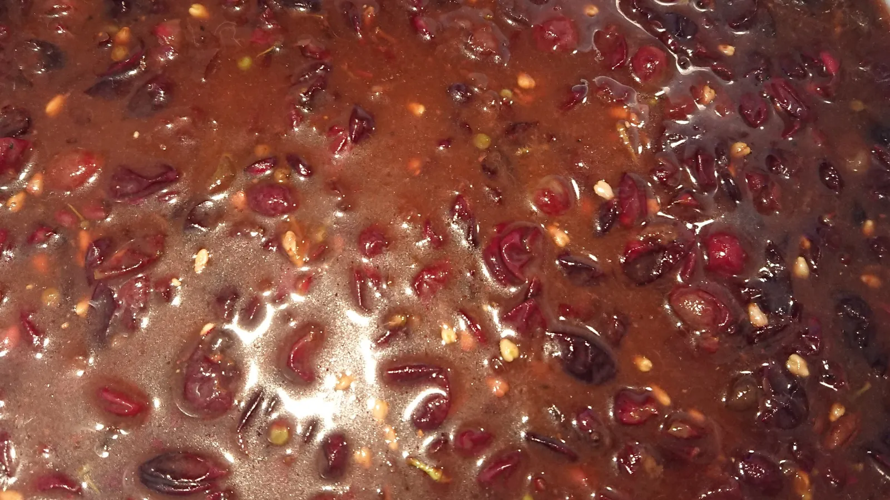

Porto Molteni – Høj oktan i 2020

Det er de små marginaler og de høje procenter, der tæller: Squadra Moltenis sæson 2020 bliver kørt på høj oktan!
Med råd og vejledning fra Capitaine de Route Carsten Jakobsen, er der nu gang i en højoktan bryg fra Molteni HQs egne druer.
– Jeg blev kontaktet af Kaptajnen, der ville have gang i en bryg fra druerne på hans sydvendte terresse på Cassa Molteni. Så jeg måtte grave dybt i mine gamle opskrifter. For når Kaptajnen siger en vin med krudt i, så snakker vi omkring de 20%, fortæller Carsten Jacobsen, der til dagligt bryggemester på 7 forskellige slags øl.
– Så jeg fandt en opskrift, som jeg fik af en gammel vinbonde, da jeg cyklede Portugal Rundt i 80’erne: En mørk hedvin på druer – og lidt rosiner, dadler og egetræ.


Den kommende højoktane bryg, der allerede har fået navnet “Porto Molteni”, forventes at være klar til sæsonstarten i april 2020. Porto Molteni kan både bruges som et start-skud til kroppen en kølig morgen inden et løb – eller den kan nydes efterfølgende til et stykke kage.
Porto Molteni kommer til at ligge på hedvinsstyrke – altså godt de 20%. Men også her træder Carsten Jacobsens erfaring tydeligt i karakter:
– Det vigtigste tidspunkt er når druemosten er færdiggæret og der skal tilsættes alkohol. Jeg måler ikke med alkoholmeter. Jeg er mere old school, og smager mig frem. Det er det bedste – og så er det rasende hyggeligt, lyder det fra Carsten Jacobsen, der er sikker på, at Kaptajn Bjørnsteen nok skal komme i mål med sin Porto Molteni